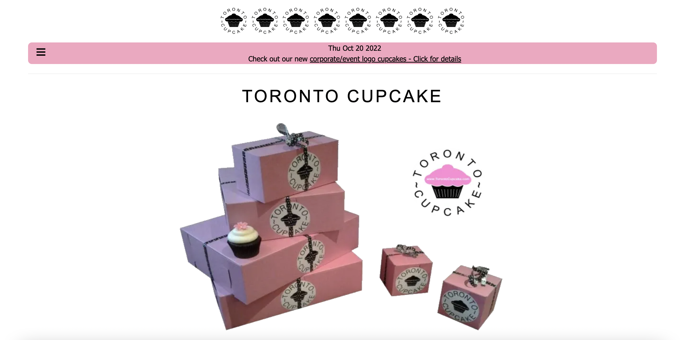
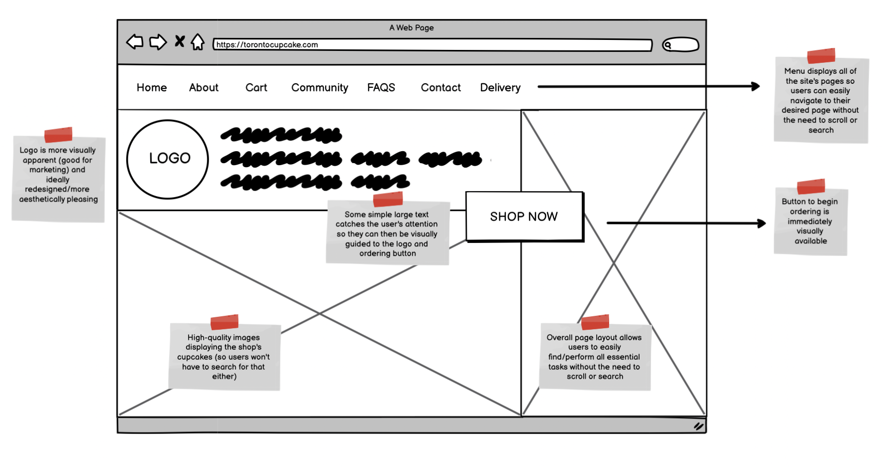
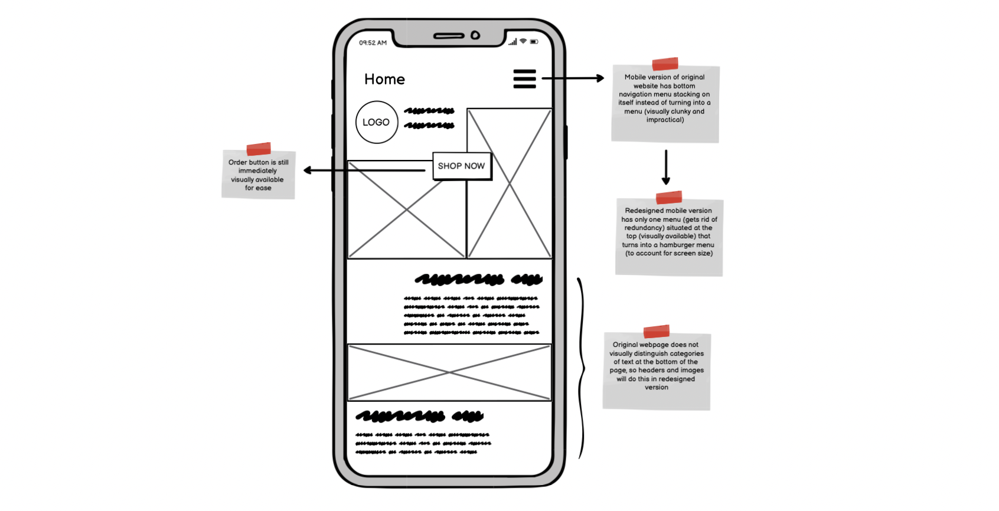
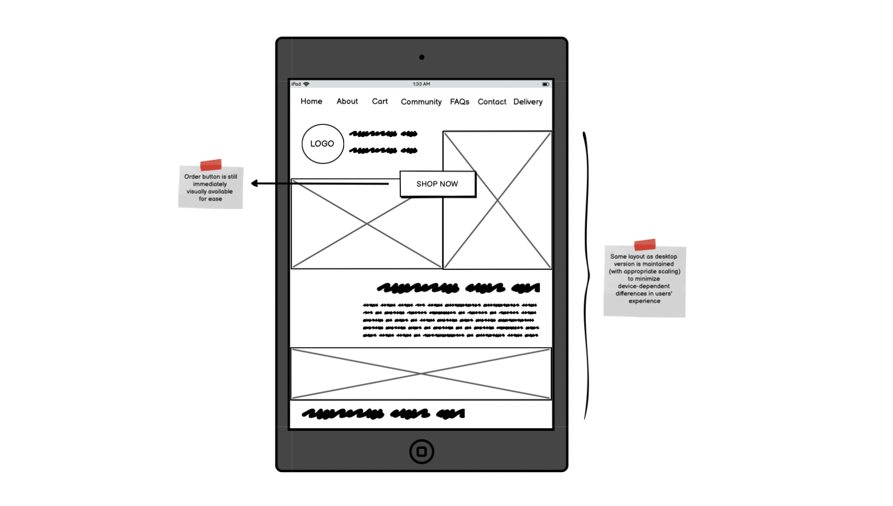
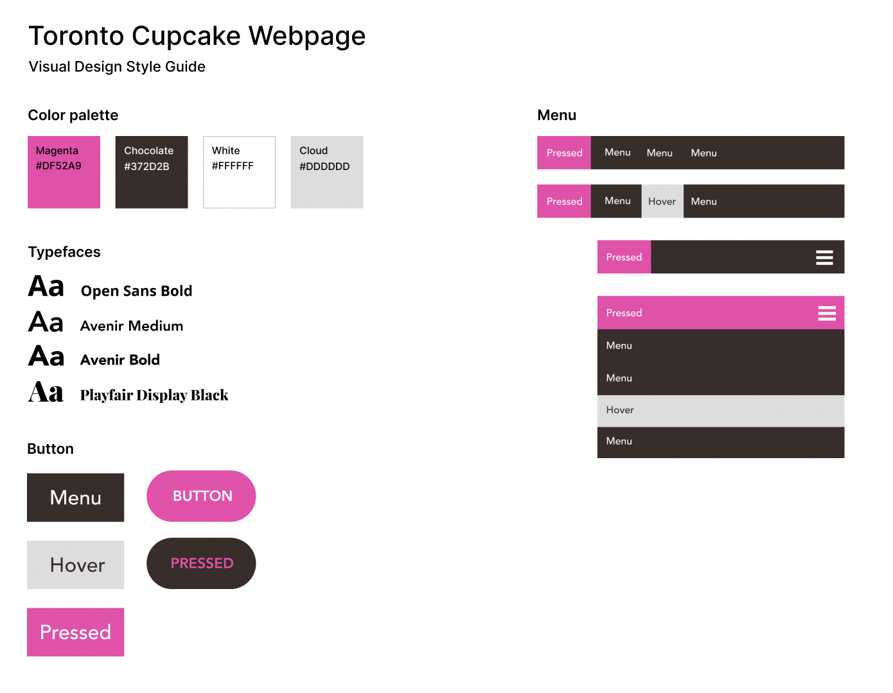
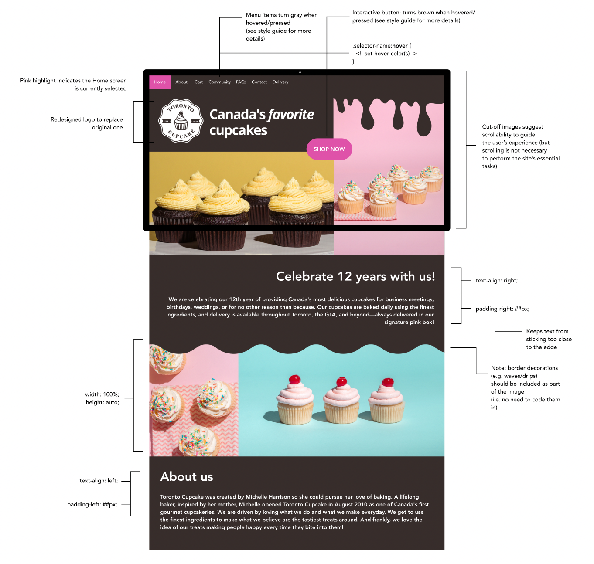
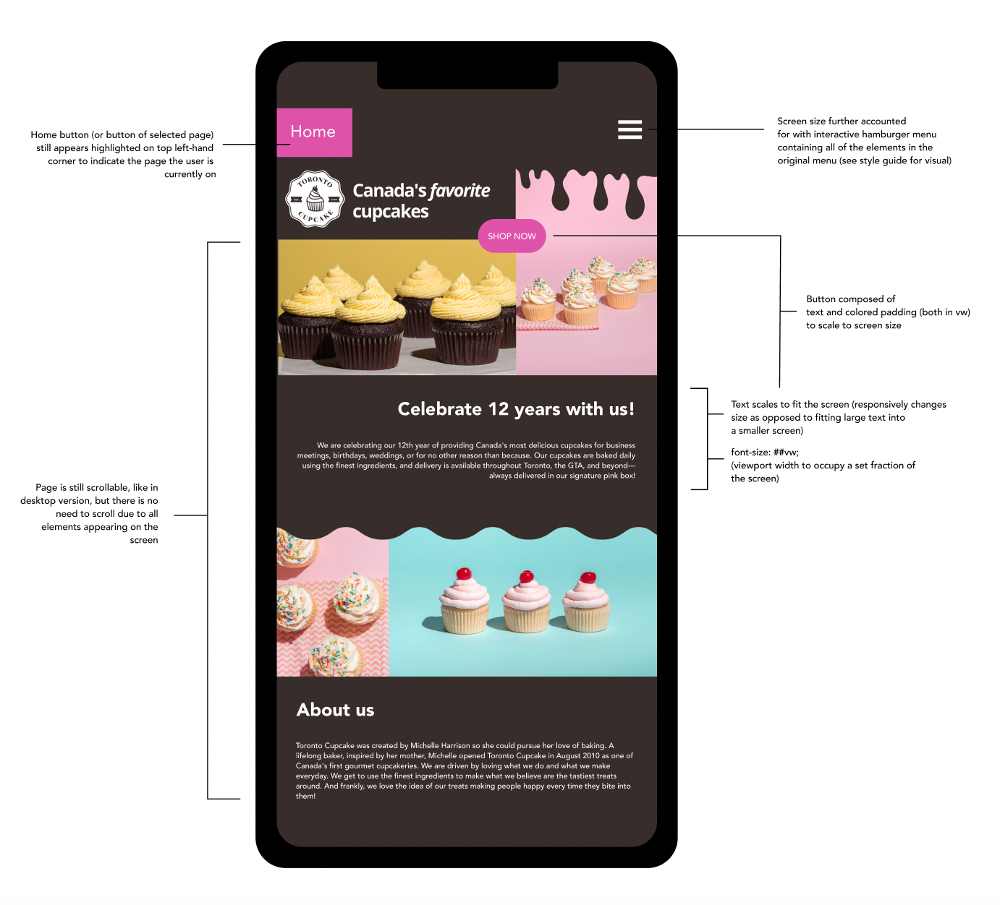
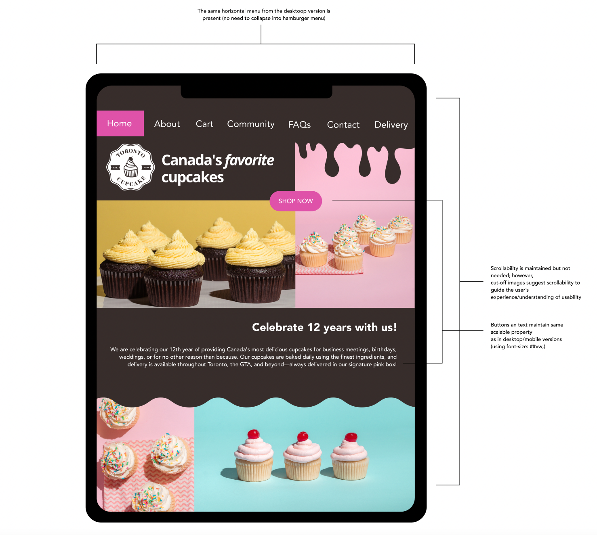

Having lived in Toronto when I was younger, I am properly familiar with the quality of the Toronto Cupcakes’ pastries. In fact, I immediately recognized their name and logo as soon as I found their website. Thus, I chose to redesign this page in an effort to lessen the gap between the quality of the bakery’s goods and that of its web interface.
Seen above is the home screen for Toronto Cupcake's website. A quick scroll also reveals some simple text welcoming the user and briefly describing the bakery before revealing bottom navigation menu containing all of the elements contained in the hamburger menu above.
| UI Attribute | Definition/Question | Findings |
|---|---|---|
| Learnability | How easily might users accomplish basic tasks upon their first encounter with the interface? |
|
| Memorability | How easily might users reestablish proficiency with the interface when returning to it after some period of time without using it? |
|
| Efficiency | How quickly might users be able to perform tasks once they’ve learned the interface? |
|
The WAVE Web Accessibility Evaluation Tool is helpful for understanding the accessibility of web content—a crucial consideration when it comes to analyzing the strengths and faults of any interface. The following are some of the findings:
To begin the redesigning process, I created three lo-fi wireframes (desktop, mobile, and tablet), establishing the elemental layout of the new webpage and annotating the ways in which it will solve the problems identified in the original home page.
  Before created the high-fidelity wireframes with which I would guide the implementation of the revamped webpage, I organized my ideas into a visual design style guide, as seen below:
Using all of the findings and ideas listed above, I ultimately designed three high fidelity prototypes (for three screen sizes) and a final webpage for the home screen of Toronto Cupcake.
  